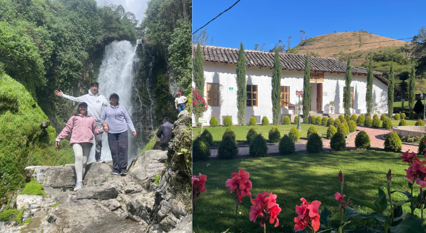
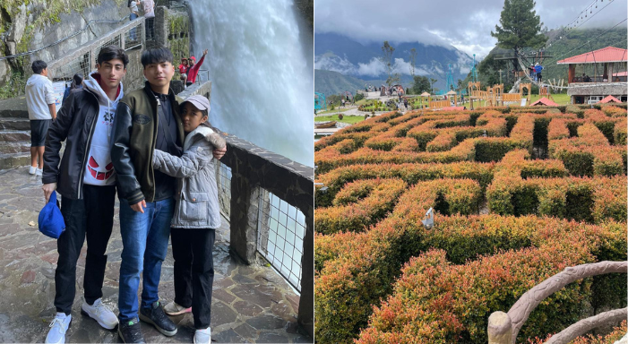
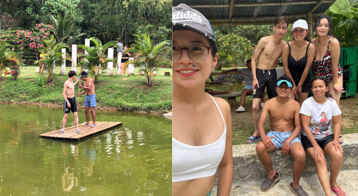

Viaje a Ibarra en familia
Junio, 2025
Viaje familiar anual visitando el interior del país
VIsitando la ciudad blanca
¿Sabías que Ibarra es conocida como la “Ciudad Blanca” del Ecuador?
Este apodo se debe a que, después del gran terremoto de 1868, la ciudad fue completamente reconstruida con casas de fachadas blancas, que hasta hoy le dan un encanto especial.
Fundada en 1606 por Cristóbal de Troya, Ibarra combina historia, cultura y una vista espectacular del imponente volcán Imbabura.
Además, es famosa por su deliciosa heladería tradicional: los famosos “helados de paila”, elaborados artesanalmente con frutas naturales y hielo traído del volcán.
Un dato curioso es que en Ibarra se celebran las fiestas del Yamor, una tradición que mezcla raíces indígenas y españolas, en honor a la cosecha del maíz.
¡Ibarra no solo es una joya andina, sino también un lugar donde la historia y la tradición viven en cada esquina!
Leer más

Viaje a baños en familia
Julio, 2025
¿Sabías que Baños de Agua Santa es conocida como la “Puerta del Amazonas”?
Este hermoso destino, ubicado al pie del volcán Tungurahua, es uno de los lugares más visitados del Ecuador por su mezcla de aventura, naturaleza y espiritualidad.
Baños recibe su nombre gracias a sus aguas termales naturales, que según la tradición local tienen propiedades curativas.
Un dato curioso es que, a pesar de la actividad del volcán, la ciudad ha sido reconstruida varias veces y sus habitantes la consideran protegida por la Virgen de Agua Santa, cuya imagen se guarda en la basílica del centro.
Además, Baños es la capital de los deportes extremos: aquí puedes practicar canopy, puenting, rafting, ciclismo y recorrer la famosa “Ruta de las Cascadas”.
¡Sin duda, Baños es un lugar donde la adrenalina y la naturaleza se encuentran en perfecta armonía!
Leer más

Viaje Puerto Quito con amigos
Agosto, 2025
Viaje con amigos a puerto quito
Fin de semana con amigos, visita a complejo recreatio
¿Sabías que Puerto Quito es considerado el “Paraíso Escondido” del noroccidente ecuatoriano?
Ubicado en la provincia de Pichincha, este encantador lugar combina la magia de la selva tropical con el clima cálido de la costa, creando un ambiente único.
Puerto Quito es un destino ideal para los amantes de la naturaleza: aquí puedes disfrutar de cascadas cristalinas, ríos perfectos para tubing y una biodiversidad impresionante.
Un dato curioso es que, a pesar de estar en la provincia de Pichincha, su vegetación y clima se asemejan más a los de la Amazonía.
Además, es hogar de numerosas comunidades que trabajan en proyectos de turismo sostenible y conservación de la vida silvestre.
¡Visitar Puerto Quito es una experiencia que conecta cuerpo y alma con la naturaleza ecuatoriana en su estado más puro!
Leer más